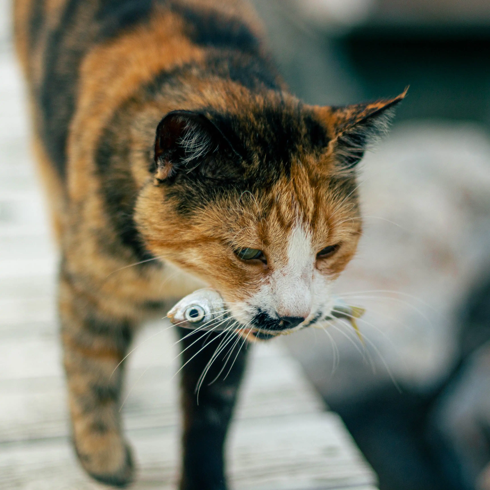

Helt rene råvarer, intet tilsat, ingen kemi. Konserveret med E vitamin.
Barf

Velegnet til katte i alle aldre, herunder steriliserede katte. Da foderet giver en sund og blank pels, afhjælper det også pelsknuder og hårboller. Indholdet af animalske ingredienser i Naturea LAKS / KYLLING består af 75% laks/kylling, kartoffel, kyllingefedt, bryggersgær, carob, hørfrø, fiskeolie, tang, æble, tranebær, blåbær, tomat, kaliumchlorid, yucca schidigera.
Udover fisk/kylling består foderet af den rette mængde Omega 3 og 6, naturlige antioxidanter (tocopheroler), vitamin A, E og C. Dette produkt indeholder ikke GMO’er (Genetisk modificerede organismer).
– til alle typer katte store og små, også velegnede til neutraliserede katte. Indeholder 100% frisk fersk kød, uden kødmel. NOW! FRESH er fuld af nærende ingredienser som 100% frisk kalkun, laks og and, 100% frisk omega 3 & 6 olier fra kokosnødder, raps og grøntsager.
Sunde grøntsager, bær, frugter og urter såsom:
100 % ren mad! Ziwi peak indeholder:
Vitaminer: